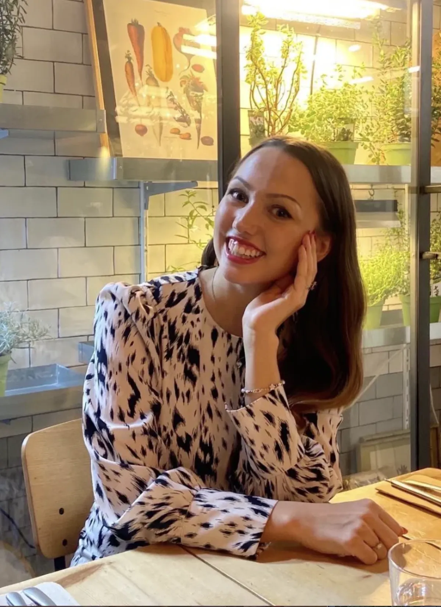

Prosjekter
Viser alle
Om

Hei! Jeg heter Josefine, er 23 år og kommer fra Oslo. På videregående gikk jeg kunstlinjen, hvor jeg utviklet en interesse for håndlagde og nære uttrykk i visuell form. Jeg likte særlig prosessen fra idé til ferdig resultat, og hvordan materialer, form og detaljer påvirker et visuelt uttrykk.
Etter videregående tok jeg et friår og dro blant annet på språkreise til Korea. Der deltok jeg i workshops om visuell kommunikasjon, merkevarebygging og skjønnhetsindustrien, noe som ga meg innsikt i hvordan design brukes strategisk i alt fra emballasje til visuell identitet.
Derfor valgte jeg å studere grafisk design ved NTNU. Studiet har gitt meg mulighet til å utforske ulike sider av designfaget, blant annet typografi, visuelle identiteter og digitale flater. Gjennom samarbeid med studenter fra webdesign og interaksjonsdesign har jeg også fått en økende interesse for UX-design. Jeg trives godt med kreative prosjekter og liker spesielt å jobbe i team og utvikle ideer sammen med andre.
- Fokus Visuell identitet, brukervennlighet
- Verktøy Figma, Adobe, Glyphs
- E-post josefinegjertsen@gmail.com
Kontakt
For samarbeid, praksisplasser eller oppdrag: